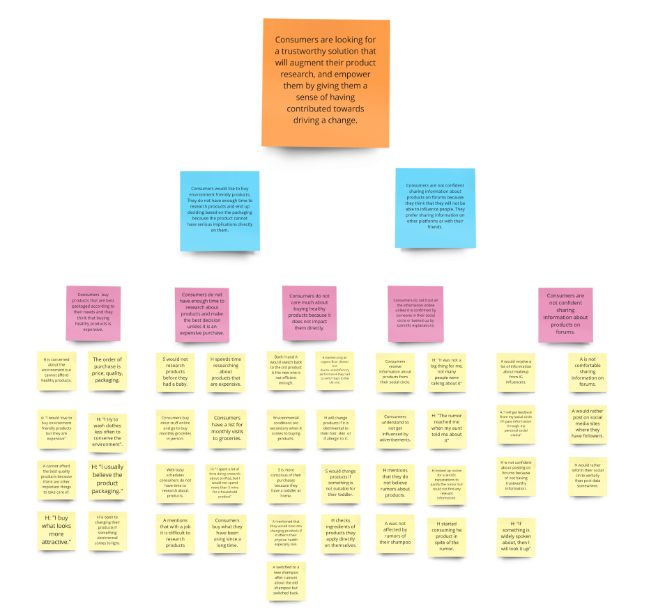
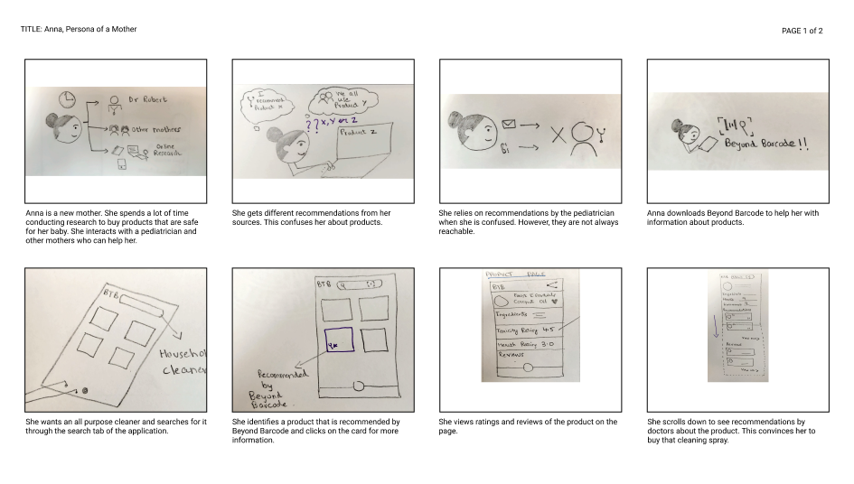
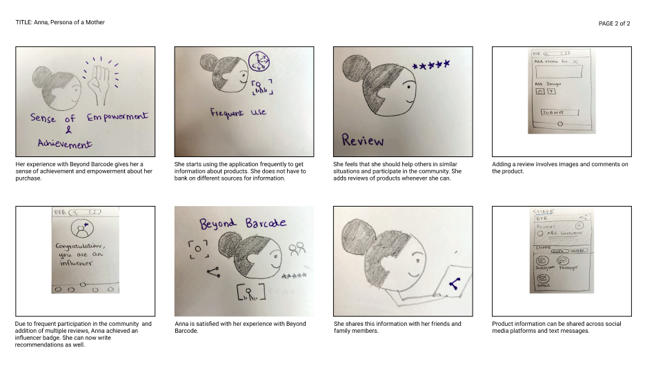
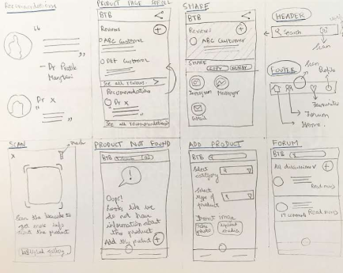
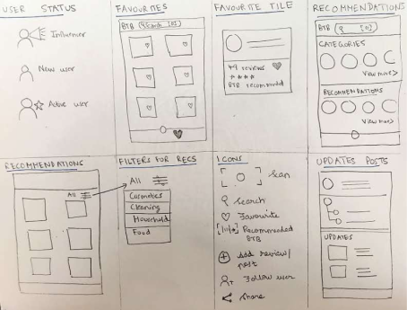
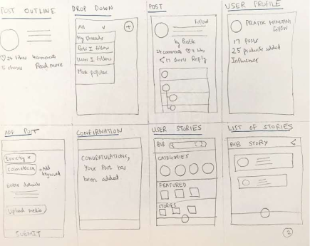
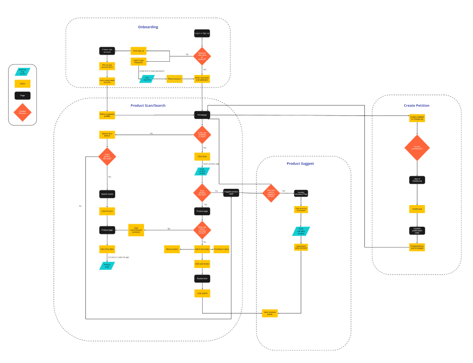
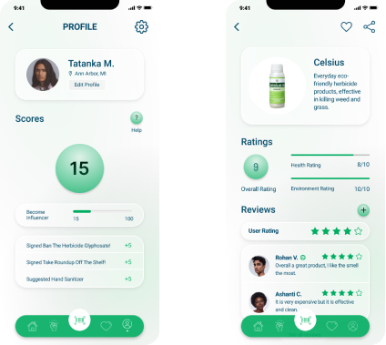
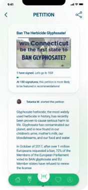

Beyond Barcode
Problem
Many consumers do not have the time or access to information about toxicity of both inert and active ingredients in the products they buy. Our aim with this project is to empower consumers with information about toxic ingredients used in products. This will enable them to take better informed decisions while buying products.
My role
Research: User Interviews, Competetive Analysis, Affinity Mapping, Personas
UX Design: User Flow, Sketches, Storyboards, Wireframes, Prototype.
Research
We conducted 10 interviews with people of defferent age groups, to understand the following: How consumers get information about products ? Attitude towards the environment. How consumers react to news about products that are toxic to the environment or to people ? Motivations towards learning about the toxicity level of products. How comfortable consumers are to change products that they have been using ?
Problem Statement
How might we empower users with information about toxic products, and give them a sense of having contributed towards making a change.
Sketches




User Flow
Prototype
